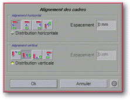

<!-- Documentation Xclamation (c)1994-2000 AXENE contact axene@axene.org>
<html>

<head>
<title>Alignement des cadres</title>
</head>

<body BGCOLOR="#FFFFFF" BACKGROUND="Images/back.gif" TEXT="#000000">

<p ALIGN="right">  </p>

<p><br>
<br>
Cette boîte de dialogue permet d'aligner de façon précise une sélection de plusieurs
cadres, les uns avec les autres. Les alignements peuvent se faire en horizontal aussi bien
qu'en vertical. Pour ouvrir cette boîte, il faut sélectionner au moins deux cadres dans
le plan d'affichage. Tout cadre peut être inscrit dans un rectangle dont les côtés sont
parallèles aux bords de la page. Nous appellerons &quot;bord gauche d'un cadre&quot; le
côté gauche de ce rectangle virtuel, &quot;centre d'un cadre&quot; le centre du
rectangle virtuel ; de même, nous utiliserons les expressions &quot;bord droit&quot;,
&quot;bord supérieur&quot; et &quot;bord inférieur&quot;. <br>
<br>
</p>

<hr>

<p align="center"><br>
<br>
<i><small>Photo d'écran&nbsp;: Boîte d'alignement des cadres </small></i></p>

<p><br>
</p>

<hr>

<p><br>
</p>

<h3>Partie supérieure de la boîte de dialogue&nbsp;:</h3>

<ul>
  <li><a NAME="halignment_frame">la section &quot;<i>Alignement horizontal</i>&quot; permet de
    <b>définir la façon d'aligner les cadres horizontalement</b>. Cette section contient
    quatre boutons icônes pour choisir l'axe d'alignement horizontal. Si aucun d'eux n'est
    enfoncé, il n'y aura pas d'alignement horizontal de réalisé. Il ne peut y avoir qu'un
    seul de ces boutons icônes de sélectionné en même temps. </a><br>
    &nbsp;<ol>
      <li> <a NAME="left_alignment_icon">le premier bouton
        icône permet d'aligner les cadres par rapport à leur <b>bord gauche</b>. </a><br>
        &nbsp;</li>
      <li> <a NAME="hcenter_alignment_icon">le second
        bouton icône permet d'aligner les cadres par rapport à l'axe vertical passant par leur <b>centre</b>.
        </a><br>
        &nbsp;</li>
      <li> <a NAME="right_alignment_icon">le troisième
        bouton icône permet d'aligner les cadres par rapport à leur <b>bord droit</b>. </a><br>
        &nbsp;</li>
      <li> <a NAME="hborder_alignment_icon">le dernier
        bouton icône permet d'aligner les cadres de gauche à droite, <b>bord gauche à bord
        droit</b>. Cela signifie qu'un cadre aura son bord gauche aligné sur le bord droit du
        cadre situé à proximité sur sa gauche. </a><br>
        &nbsp;</li>
      <li><a NAME="hspacing_textfield">le champ texte <i>&quot;Espacement&quot;</i> permet de <b>définir
        la distance séparant les cadres</b> en fonction de l'axe d'alignement. La valeur est
        exprimée en millimètres et doit être comprise entre -500(mm) et 500(mm). Par défaut,
        la valeur est 0(mm), ce qui permet d'aligner horizontalement les cadres. Ce champs est
        grisé lorsque le bouton poussoir <i>&quot;Distribution horizontale&quot;</i> est activé.
        </a><br>
        &nbsp;</li>
      <li><a NAME="hdistribution_toggle">le bouton poussoir <i>&quot;Distribution
        horizontale&quot;</i> ne peut être activé que si la sélection de cadres comporte au
        moins trois cadres. Il permet de <b>distribuer horizontalement les cadres entre les deux
        cadres des extrémités</b>. Lorsque ce mode est activé, le cadre le plus à gauche et
        celui le plus à droite de la sélection ne se déplacent pas. L'espace qui sépare leurs
        axes d'alignement est réparti régulièrement entre les cadres du milieu de la
        sélection. </a><br>
        &nbsp;</li>
    </ol>
  </li>
  <li><a NAME="valignment_frame">la section <i>&quot;Alignement vertical&quot;</i> permet de <b>définir
    la façon d'aligner les cadres verticalement</b>. Cette section contient quatre boutons
    icônes pour choisir l'axe d'alignement vertical. Si aucun d'eux n'est enfoncé, il n'y
    aura pas d'alignement vertical de réalisé. Il ne peut y avoir qu'un seul de ces boutons
    icônes de sélectionné en même temps.</a><br>
    &nbsp;<ol>
      <li> <a NAME="top_alignment_icon">le premier bouton
        icône permet d'aligner les cadres par rapport à leur <b>bord supérieur</b>. </a><br>
        &nbsp;</li>
      <li> <a NAME="vcenter_alignment_icon">le second
        bouton icône permet d'aligner les cadres par rapport à l'axe horizontal passant par leur
        <b>centre</b>. </a><br>
        &nbsp;</li>
      <li> <a NAME="bottom_alignment_icon">le troisième
        bouton icône permet d'aligner les cadres par rapport à leur <b>bord inférieur</b>. </a><br>
        &nbsp;</li>
      <li> <a NAME="vborder_alignment_icon">le dernier
        bouton icône permet d'aligner les cadres de haut en bas, <b>bord supérieur à bord
        inférieur</b>. Cela signifie qu'un cadre aura son bord supérieur aligné sur le bord
        inférieur du cadre situé à proximité au-dessus. </a><br>
        &nbsp;</li>
      <li><a NAME="vspacing_textfield">le champ texte <i>&quot;Espacement&quot;</i> permet de <b>définir
        la distance séparant les cadres</b> en fonction de l'axe d'alignement. La valeur est
        exprimée en millimètres et doit être comprise entre -500(mm) et 500(mm). Par défaut,
        la valeur est 0(mm), ce qui permet d'aligner verticalement les cadres. Ce champs est
        grisé lorsque le bouton poussoir <i>&quot;Distribution verticale&quot;</i> est activé. </a><br>
        &nbsp;</li>
      <li><a NAME="vdistribution_toggle">le bouton poussoir <i>&quot;Distribution verticale&quot;</i>
        ne peut être activé que si la sélection de cadres comporte au moins trois cadres. Il
        permet de <b>distribuer verticalement les cadres entre les deux cadres des extrémités</b>.
        Lorsque ce mode est activé, le cadre le plus haut et celui le plus bas de la sélection
        ne se déplacent pas. L'espace qui sépare leurs axes d'alignement est réparti
        régulièrement entre les cadres du milieu de la sélection. </a></li>
    </ol>
  </li>
</ul>

<p><br>
</p>

<h3>Partie inférieure de la boîte de dialogue&nbsp;:</h3>

<ul>
  <li><a NAME="button_ok"><i>&quot;Ok&quot;</i> <b>accepte les paramètres</b> entrés dans la
    boîte, ferme celle-ci et aligne les cadres en fonction des choix effectués. </a><br>
    &nbsp;</li>
  <li><a NAME="button_cancel"><i>&quot;Annuler&quot;</i> <b>annule toutes les opérations</b>
    d'alignement et ferme la boîte. </a></li>
</ul>

<p><br>
</p>

<hr>

<p ALIGN="right"></p>
</body>
</html>
